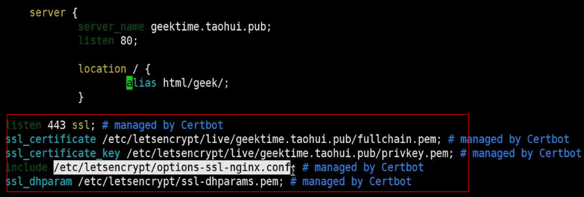
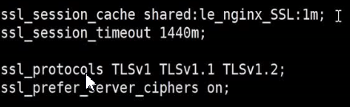
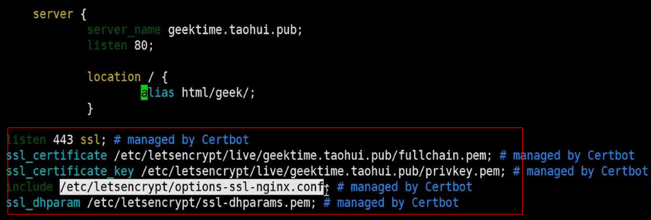

1_初识Nginx
nginx优点
- 高并发，高性能
- 扩展性好 模块化设计
- 高可靠 持续不间断提供服务（不宕机）
- 热部署
- BSD许可证 开源免费，可商业用途下修改源码
nginx版本
- 开源免费版 http://nginx.org
- 非开源商业版 nginx plus, http://nginx.com
- tengine 阿里巴巴版 不能同步升级官方版本
- 开源免费版OpenResty http://OpenResty.org
- 商业版OpenResty
安装
解压后的文件说明
- auto
- cc 用于编译
- lib lib库
- os 对操作系统的判断
- type
- CHANGE 特性
- conf 示例文件
- configure 脚本，编译前准备工作
- contrib
- LICENSE
- man nginx帮助文件
- src 源码
- auto
./configure配置和准备软件包以进行编译和安装- 参数说明 (帮助命令
./configure --help|more)- 指定 –prefix 目录 ，其他目录会在此目录下新建相应目录
- –with-*_module 、 –without-*_module 指定使用或不使用哪些模块
- –with-* 编译时需指定的特殊参数
- –add-module=第三方模块路径
- 生成objs目录
- ngx_modules.c 包含的模块
- 参数说明 (帮助命令
make编译- 新安装可用make install
- 升级版本 make后拷贝文件(文件在objs目录)到已安装目录
配置环境变量
- vim /etc/profile
- 结尾加入
export NGINX_HOME=/usr/local/nginxexport PATH=$PATH:$NGINX_HOME/sbin - source /etc/profile
nginx配置文件的通用语法
- 配置文件由指令与指令块构成
- 每条指令以分号结尾，指令与参数间以空格分隔
- 指令块以大括号将多条指令组织在一起
- incluede语句允许组合多个配置文件以提升可维护性
- 使用#注释
- $符号使用变量
- 部分指令的参数支持正则表达式
http配置指令块
- http
- server
- upstream
- location
Nginx命令
格式 nginx -s reload
- 帮助 -h
- 指定配置文件 -c
- 指定运行目录 -p
- 发送信号 -s
- 立刻停止服务 stop
- 优雅停止服务 quit
- 重载配置文件 reload
- 重新开始记录日志文件 reopen
- 测试配置文件语法 -t -T
- 打印版本、编译信息等 -v -V
热部署
- 备份旧文件，拷贝新文件覆盖
- 告诉旧master进程要热部署了，kill -USR2 oldProcessId
- 会新启动一个master进程（使用新nginx二进制文件启动）和worker进程
- 旧worker进程已不监听端口了，新请求都由新进程处理
- kill -WINCH oldProcessId 通知旧master进程关闭旧的worker进程
- 此时旧master进程依然存在，如果升级有问题需版本回退，reload可使旧master唤醒旧worker进程
日志切割
手动
- 备份旧日志
- 执行 nginx -s reopen
自动
新建rotate.sh脚本 内容如下 （分配执行权限）
1
2
3
4
5
6
7
8
9#!/bin/bash
LOG_PATH="/var/log/nginx/" #日志的根目录
RECORD_TIME=$(date -d "yesterday" +%Y-%m-%d+%H:%M) #切割日志的后缀
PID=/var/run/nginx/nginx.pid
mv ${LOG_PATH}/access.log ${LOG_PATH}/access.${RECORD_TIME}.log
mv ${LOG_PATH}/error.log ${LOG_PATH}/error.${RECORD_TIME}.log
#向Nginx主进程发送信号，用于重新打开日志文件
kill -USR1 `cat $PID`新增crontab定时任务
crontab
配置静态资源服务器
配置location
location /statics/ {
alias statics;//静态文件根目录 不使用root，root会带入url路径
autoindex on; //开启目录浏览
set $limit_rate 1k; //每秒传输1k字节到浏览器；多用户高并发时限制响应流量，防止大文件传输影响其他文件访问
}
配置gzip
gzip on;
gzip_min_length 1;//1个字节时不压缩（一个字节一个tcp报文可以直接发送，再进行压缩没有意义）
gzip_comp_level 2; //压缩级别
gzip_types text/plain application/javascript application/x-javascript text/css application/xml text/javascript application/x-httpd-php image/jpeg image/gif image/png application/vnd.ms-fontobject font/ttf font/opentype font/x-woff image/svg+xml; // 压缩包没必要再压缩
access日志
定义格式
1 | http{ |
搭建具备缓存功能的反向代理服务
缓存上游服务器响应内容，如果需要实时状态则不可使用
代理服务器配置
http{
upstream local{
server 127.0.0.1:8080;//真是服务地址
}
proxy_cache_path /tmp/nginxcache levels=1:2 keys_zone=my_cache:10m max_size=10g inactive=60m use_temp_path=off; //
location / {
proxy_set_header Host $host; //将代理服务器获取到浏览器的Host发送到真实服务器，不然真是服务器获取的是代理服务器host
proxy_set_header X-Real-IP $remote_addr;
proxy_set_header X-Forwarded-For $proxy_add_x_forwarded_for;
proxy_cache my_cache;//在http模块定义
proxy_cache_key $host$uri$is_args$args;
proxy_cached_valid 200 304 302 ld;
proxy_pass http://local;
}
}
proxy_cache_path
语法: proxy_cache_path path [levels=levels] keys_zone=name:size [inactive=time] [max_size=size] [loader_files=number] [loader_sleep=time] [loader_threshold=time];
- path 定义缓存文件存放目录；
- levels：level 定义了缓存的层次结构，每层可以用1（最多16中选择，0-f）或2（最多256种选择，00-ff）表示，中间用 [冒号] 分隔。“levels=1:2”表示开启1、2层级(第2层级理论有16*256个目录)。
- keys_zone：共享内存区的名称和大小；
- inactive inactive=30m 表示 30 分钟没有被访问的文件会被 cache manager 删除，inactive的默认值是10分钟。 需要注意的是，inactive和expired配置项的含义是不同的，expired只是缓存过期，但不会被删除，inactive是删除指定时间内未被访问的缓存文件
- max_size：限制被缓存的响应数据的总量,基于LRU清除数据，不指定会占满磁盘空间
用GoAccess实现可视化实时监控access日志
安装
安装依赖
GoAccess在使用源码安装时，依赖下列组件。
- 为方便最终日志统计时显示IP地理位置，需要安装依赖项GeoIP-devel：
执行命令：yum install GeoIP-devel.x86_64 - 安装ncurses-devel开发库：
执行命令：yum install ncurses-devel - 安装tokyocabinet-devel开发库：
执行命令：yum install tokyocabinet-devel - 安装openssl-devel开发库：
执行命令：yum install openssl-devel
下载,解压goaccess
wget https://tar.goaccess.io/goaccess-1.9.2.tar.gz
编译
./configure --enable-utf8 --enable-geoip=legacy -prefix=/home/vvf/goaccessmakemake install
启动
./goaccess /home/vvf/nginx/logs/access.log -o /home/vvf/nginx/html/report.html –real-time-html daemonize
- 注：*
- Tx.Amount：流量 *
- 1KiB=2^10=1024, *
- 1MiB=2^20=1048576=1024KiB*
- 1GiB=2^30=1,073,741,824=1024MiB *
从网络原理来看SSL安全协议
SSL/TLS通用模型

TLS安全密码套件解读

- ECDHE：椭圆曲线加密算法 一种非对称加密算法 ，浏览器和服务器独立生成相同的秘钥，使用此秘钥加密数据
- RSA：身份验证算法 （非对称）
- AES: 对称加密算法
- GCM 分组模式 提高多核CPU加解密性能
对称加密与非对称加密各自的应用场景
对称加密：

- 加密：秘钥 XOR 明文 = 密文
- 解密：秘钥 XOR 密文 = 明文
- 加解密性能高：遍历一遍即可得到密文或者明文
非对称加密
- 加密 公钥加密私钥解密
- 身份验证 私钥加密公钥解密（公钥能解开则说明报文是私钥持有者发送的）提供签名保障
证书的公信力如何保证
浏览器验证证书有效性，主要根据：
- 是否过期
- 颁发此证书的根证书是否有效

TLS通讯最主要任务：
- 交换密钥
- 加密数据
SSL协议握手时Nginx性能瓶颈
影响qps主要指标：
- 小文件：握手 （密钥交换算法，RSA算法）
- 大文件：对称加密算法(AES)
优化手段：
- 小文件较多时优化密钥交换算法（椭圆曲线算法）和RSA算法的密码强度
- 大文件较多时优化AES算法的密码强度
- 使用更高效算法
使用免费SSL证书实现HTTPS网站
LetsEncrypt
- yum install python2-certbot-nginx
- certbot –nginx –nginx-server-root=/home/vvf/nginx/conf/ -d 自己的域名
- 配置文件的server块自动新增了配置
通用参数：/etc/letsencrypt/options-ssl-nginx.conf
- ssl_session_cache 设置1m 大概缓存4000个链接
- ssl_session_timeout 1440m （1440分钟=一天）
- ssl_protocols 支持的TLS协议
- ssl_prefer_server_ciphers on;//开启由nginx决定使用哪些协议（ssl_ciphers配置提供可选协议）与浏览器通讯
- ssl_ciphers nginx支持的安全套件，靠前优先级高
ssl_dhparam 非对称加密使用参数设置，决定加密强度
- 配置文件的server块自动新增了配置
内网服务
ngrok